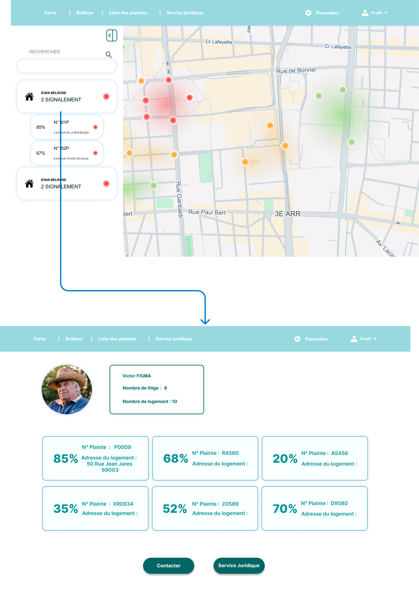

Dès que le locataire ramarque une tache de moisissure sur le mur il se rend sur l'application pour calculer en temps réel plusieurs indicateurs clés : taux d’humidité, qualité de l’air, température et point de rosée. Il peut déposer un litige rapidement via l'application en remplissant un formulaire simple, puis l'envoyer à la mairie.
Documentation
Ce projet propose une solution innovante pour lutter contre l'humidité dans les logements.
Un service numérique connecté à des capteurs, permettant aux mairies de détecter rapidement les risques liés à l'humidité au sein des logements de leurs communes.
Un contexte social tendu dans le bassin Lyonnais
Dès que le locataire ramarque une tache de moisissure sur le mur il se rend sur l'application pour calculer en temps réel plusieurs indicateurs clés : taux d’humidité, qualité de l’air, température et point de rosée. Il peut déposer une plainte rapidement via l'application en remplissant un formulaire simple, puis l'envoyer à la mairie.
Ces problèmes sont fréquemment invisibles ou difficiles à détecter, mais ils ont des effets graves sur la santé, notamment chez les personnes vulnérables.
La lenteur des démarches administratives et le manque d'outils adaptés compliquent la résolution rapide de ces situations.
Il devient essentiel d'avoir un dispositif simple, fiable et accessible pour mesurer les risques liés à l'humidité, faire valoir les droits des locataires et encourager une intervention plus efficace de la part des collectivités et des propriétaires.
Le besoin urgent d'une solution pour améliorer la gestion et protéger durablement la santé des occupants.
12 000 logements insalubres
Environ 2,5 % des résidences principales privées de la région lyonnaise sont considérées comme insalubres, soit environ 12 000 logements selon les estimations de la Métropole de Lyon.
Amélioration de l'image et de l'attractivité de la ville
La Métropole de Lyon estime à environ 2,1 % le pourcentage de résidences principales privées présentant des risques pour la santé ou la sécurité des occupants, soit plus de 10 000 logements.
16 000 logements indignes dans le Rhône
Le département du Rhône comptait environ 16 000 logements indignes, selon une enquête publiée en décembre 2018.
322 signalements d'habitat indigne
En 2023, 322 signalements d'habitat indigne ont été enregistrés via la plateforme Histologe à Lyon.
Nos services
Les citoyens locataires
Les locataires se retrouvent souvent démunis face aux problèmes d'humidité, en grande partie à cause d'un manque de sensibilisation sur le sujet. Moisissures, poches d'eau, taches d'humidité et absence d'intervention de la part des bailleurs sont autant de difficultés auxquelles ils doivent faire face.

Les mairies
Les mairies peinent à inciter les bailleurs à régler les problèmes d’hygiène, en partie à cause du manque de données sur l’insalubrité des logements. La visibilité réduite sur le degré réel d’insalubrité, la présence de bailleurs problématiques souvent identifiés mais peu sanctionnés, les coûts élevés des réparations et le manque de personnel compliquent encore davantage les interventions
Comment fonctionne notre application
Pour les citoyens
Les locataires peuvent facilement déposer un litige (moisissure, humidité) via un formulaire simple avec photos. L'application confirme l'envoi et alerte les parties. Le locataire peut consulter l'historique et l'état de ses demandes, accéder à des conseils pratiques pour gérer l'humidité, et faire des relances si nécessaire.
Le locataire peut relancer un litige en ouvrant l'application, sélectionnant le litige dans l'onglet "Historique", puis en ajoutant une note avant d'envoyer la relance, qui est ensuite confirmée.
Userflow
Le locataire peut accéder à des conseils pratiques en ouvrant l'application, en cliquant sur l'onglet "Conseil" pour choisir et lire les informations qui peuvent être utiles.
Userflow

Pour les Mairies
Le site offre une interface pour la gestion des litiges d'habitat. L'agent peut visualiser tous les logements signalés sur une carte interactive pour identifier les zones à problèmes. Il accède également à un tableau des litiges par bailleur pour suivre leur performance et les plaintes associées. Chaque litige peut être consulté en détail (description, photos, état d'avancement) et l'agent dispose des outils pour contacter les bailleurs ou solliciter un service juridique si nécessaire, permettant une intervention efficaces.
L’agent de mairie peut visualiser les logements signalés sur une carte interactive et lancer une recherche par type d’insalubrité ou nom de bailleur. Les résultats sont regroupés par bailleur.
Userflow
L’agent de mairie consulte l'ensemble des plaintes avec profil du bailleur, puis choisit de contacter ce dernier ou le service juridique. Les coordonnées s’affichent pour faciliter le contact.
Userflow
L’agent de mairie consulte les plaintes avec profil du bailleur, puis peut rédiger un message et envoyer le dossier complet au service juridique.
Userflow
L’agent de mairie accède à la liste des litiges, choisit un litige visualise son état d’avancement avec le profil du bailleur. Il peut ensuite contacter le bailleur directement.
Userflow
Avenir
HumiTrack prévoit d’étendre son service à de nouvelles villes et régions. L’équipe souhaite renforcer la collaboration avec les collectivités pour mieux protéger les habitants. On a pensé aussi a des fonctionnalités qu'on pouvaient rajoutés: programmer des interventions des professionnels, Aviser ARS (Agence Régional de santé).